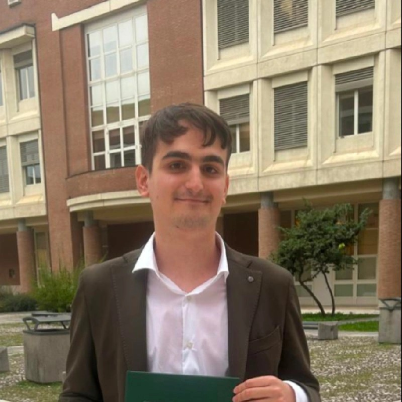

Samuele Tondelli
I'm a final-year Master's student in Computer Science and Engineering at Politecnico di Milano, interested in making machine-learning systems faster through GPU performance engineering and low-level systems work. My current thesis focuses on optimizing GPU inference for a graph transformer used in protein docking. Previously, I designed a custom FPGA accelerator for autonomous deep-space satellites and developed embedded and telemetry software for Formula SAE. I'm looking for internships and research opportunities in ML systems, GPU computing, and performance engineering, feel free to reach out!
Current Work
Master's Thesis: GPU Inference for Protein Docking Optimizing the inference of a graph transformer used for protein docking.
My thesis at Politecnico di Milano explores how to reduce the inference latency of a graph transformer for protein docking through GPU-focused performance engineering, as currently graph operations are implemented via Python only libraries making inference hard to scale to real-life workloads.
Experiences
Student Researcher | Genomic ML September 2025 - February 2026 Researching ML approaches for genomic variant classification at NECSTLab, Politecnico di Milano.
- Conducted a survey study on ML approaches for single nucleotide variant classification.
- Benchmarked four models across 144 genomic datasets: MLP, XGBoost, logistic regression, and random forest.
- Reduced training resource usage by up to 10× while minimally impacting test performance.
- Analyzed pathogenicity prediction for variants of uncertain significance, achieving 90% consistency across 72 models.
- Research paper accepted at IEEE EMBC 2026.
Student Researcher | FPGA Deep Space March 2025 - September 2025 Accelerated autonomous deep-space satellite navigation at NECSTLab, Politecnico di Milano.
- Accelerated the ECOS library for autonomous navigation of deep-space satellites.
- Developed accelerators for sparse matrix computations, including SpMV and LDLT kernels, using Vitis HLS and Vivado.
- Deployed the IP on a Kria KD240 and developed a C Linux driver, achieving a 2× speedup over software.
- Competed in the 2025 AMD Open Hardware competition.
Software Engineer Intern | Formula SAE March 2023 - May 2024 Developed embedded and telemetry software at More Modena Racing, University of Modena and Reggio Emilia.
- Co-led a team of four developing software for combustion and hybrid Formula SAE cars.
- Developed live wireless telemetry at 1 Mbps over 500 m using a Raspberry Pi 5 and Grafana.
- Developed car dashboard software on an STM32 controller that reads CAN bus data.
Articles
-
Gradino: optimizing a CPU only autograd engine with AVX-512 and custom memory allocators
In the past months I have built an autograd engine in C from scratch, optimizing the performance by using SIMD and reducing memory allocations overhead via arena allocators.